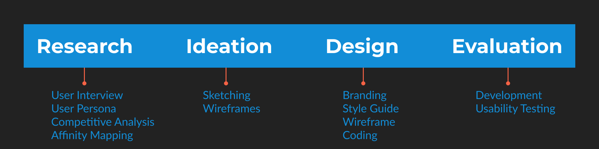

Project Overview
A portfolio should also reflect good UX design, so I decided to turn my portfolio into its own UX/UI project. Not only as a way to make my portfolio a great user experience, but also as a way to reflect on my skills and see where I can continue to improve.
Goals
- Encourage users to want to work with me.
- Create a meaningful user experience for those viewing my portfolio
- Learn how to identify myself as a designer to the world.
Challenges
- Presenting projects within user time constraints.
- Standing out from other UX/UI portfolios.
- Increasing findability of projects relevant to user needs.
Solutions
- Present a clear sequence for users to follow.
- Develop personal branding and create a unique visual experience that stands out in user minds.
- Offer shortcuts to the information that users need.
Process
